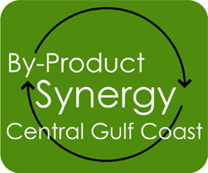

In 2009, Partners for Environmental Progress (PEP) created a revolutionary program for businesses on the Gulf Coast: By-Product Synergy Central Gulf Coast (BPS). The program matches one company's under-valued waste or by-product streams with potential users, helping to create new revenues or savings for the organizations while also addressing the social and environmental impacts to the Gulf Coast. Realizing the program's unique potential, a diverse network of 12 local companies joined the program in its initial year. The results have been astounding: 19 synergies were identified, 3 were implemented, and several more continue to be evaluated for viability.
Proven Successes in Phase One
Case Study #1
One participating company produces Hydrochloric Acid as a by-product in very large quantities. They are currently able to re-use approximately 7.5 million pounds internally, but must neutralize and waste about 3 million pounds annually. Now, material is sold to another company creating a new revenue stream, while also keeping 3 million pounds of acid out of waste water treatment facilities. To engage in the synergy, Company A undertook a $750,000 capital project – positively impacting local revenue and jobs.
Case Study #2
Another participating company found a way to improve its best practices. Previously, the company shipped its waste product to Ohio for disposal. Through collaborative discussion with BPS colleagues, the company is now using the waste internally in its own waste water treatment facility, saving almost a quarter of a million dollars a year.
Total Economic Impact of PHASE ONE
- $1,600,000 of savings for participating companies–right to bottom line!
- An additional $3,200,000 has been injected into the local economy
- The economic savings is the equivalent of 50 jobs saved or created
Total Environmental Impact of PHASE ONE
- The BPS projects have diverted more than
8,200 tons of materials from landfills, wastewater treatment plants and other disposal sites
- 5,300 tons of hydrochloric, hydrofluoric
and nitric acids are no longer going into waste treatment plants or deep injection wells
- More than 8,800 tons of CO2 emissions were avoided
FREQUENTLY ASKED QUESTIONS
What types of companies would benefit most from BPS?
BPS is open to companies and public and private entities of all sizes in south Alabama andalong the Florida and Mississippi Gulf Coasts. Our member companies vary in industry,number of employees, and annual revenue. In fact, the opportunity to identify unexpectedsynergies is expanded with greater company diversity.
Our company is already recycling and re-purposing, and we don’t have any waste, per se. Would we be a candidate to join?
Absolutely! Synergies are more than waste and re-purposed by-product. Since program inception, our members have worked to identify opportunities to share resources liketransportation, improve energy e!ciencies, share best practices, and transform waste inways that have created significant economic and environmental value. They also look foralternative fuels, water conservation, and real estate opportunities. The BPS process breaksdown the customary barriers to cross-industry communication, as well as the barriersbetween government and industry and between small and large companies.
Does the program require a large time or financial commitment?
No, that’s the beauty. Our members have estimated their time commitment was 20 hours or less over the first year. The program is very structured, following a proven process developed by the U.S. Business Council for Sustainable Development to ensure efficient use of your time. Plus we offer flexible options for membership.
How is data collected and analyzed?
Collecting and analyzing the right data is critical. Our Technical Team is lead by Dr. JohnSteadman, the Dean of Engineering at USA. Along with several other professors, Steadmanleads our engineering and environmental experts in analyzing the company data, as wellas collecting and interpreting the economic and environmental metrics resulting fromimplemented synergies.
Are member discussions confidential?
Yes - all meetings are secure and structured, enabling companies to reveal as much or as little data about their processes, feedstocks, and by- or co-products. Confidentiality agreements are required for participation and non-disclosure agreements are signed at every meeting. All public disclosures of results are anonymous and are agreed to in advance by participating companies.
COMPANIES WHO ARE INVOLVED
Akzo Nobel
Alabama Power Company
Arkema
BASF
Southern Ionics
Evonik Degussa
ExxonMobil
UOP - Honeywell Company
Huntsman Advanced Materials
Mitsubishi Polysilicon
Oil Recovery
E.I. DuPont
Outokumpu USA
ThyssenKrupp Steel
University of South Alabama
SSAB